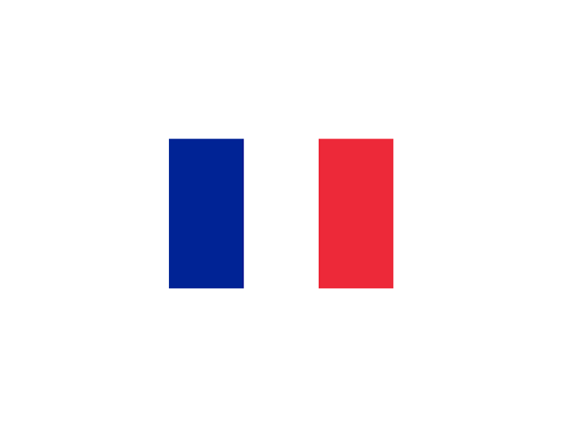
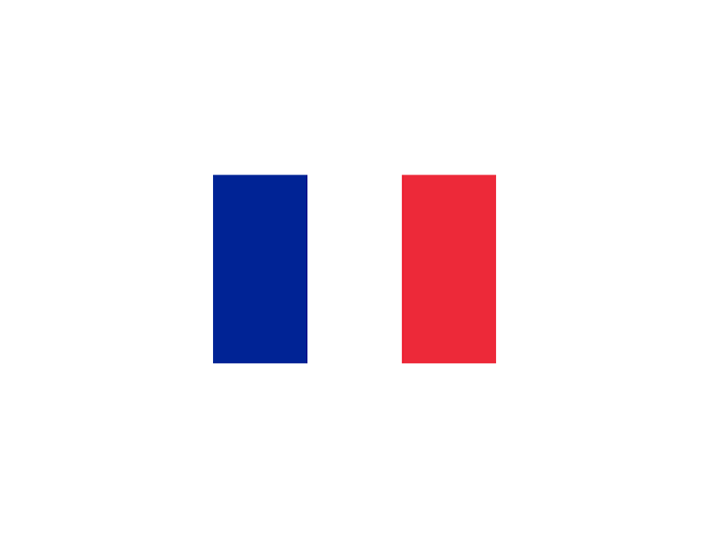
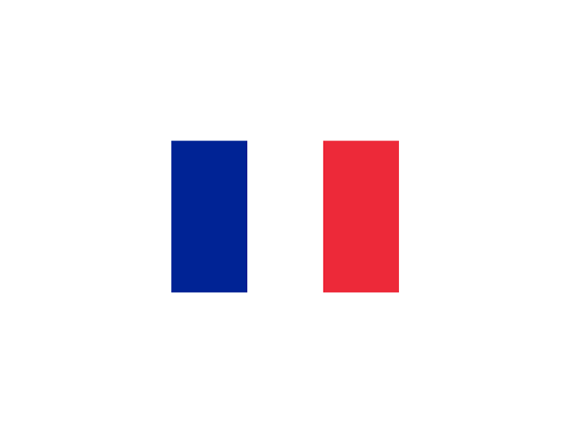
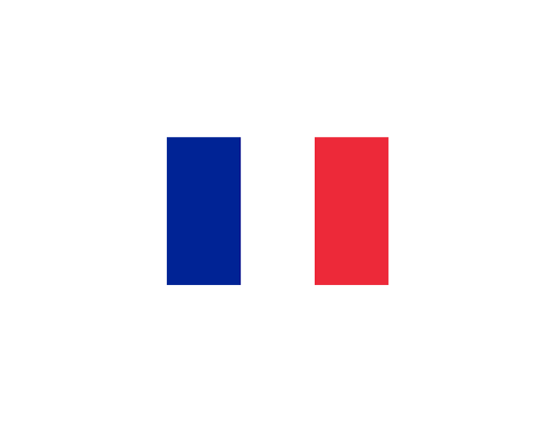

The Mirage F1C is the main fighter version, with a redesigned nose to house the Cyrano IV radar. After the 84th copy, another version, refuelable in flight, appears: the F1C-200, lengthened by 7 cm. The total production will reach 168 units for the air force alone. They were withdrawn from service in 2012.
he Mirage F1CT was the ultimate variant of the Mirage F1. 55 Mirage F1C-200 are upgraded and optimized for ground attack and take the name of Mirage F1CT. The left barrel is replaced by 2 cameras, in addition to their laser rangefinders. They entered service on November 6, 1992, and were finally withdrawn from service in 2012.

The Mirage F1CR is a reconnaissance version intended to replace the Mirage IIIR, and flies from November 20, 1981. It entered service in 1983, and is equipped with Omera 33 and 40 cameras. Their right barrel is replaced by an infrared sensor. In all, 43 units were built. There is a variant that was offered without success for export, the F1R. They were withdrawn from service in 2012.
Two-seater training version of the Mirage F1. This version was used to train pilots in the piloting of supersonic planes and it was also used to them to learn all the different weapon systems before their certification of fighter pilot.